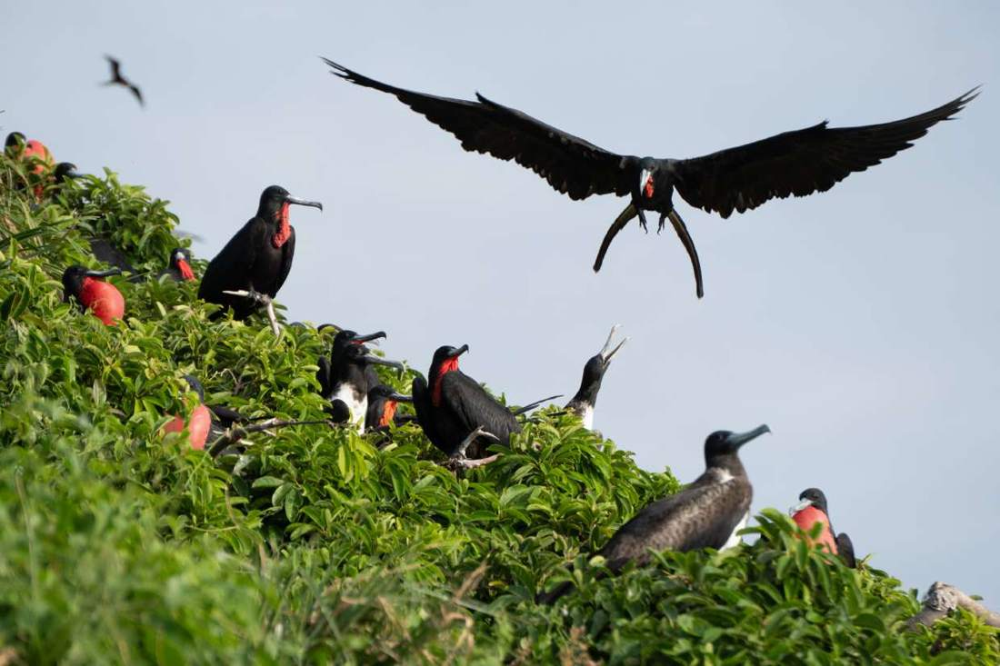
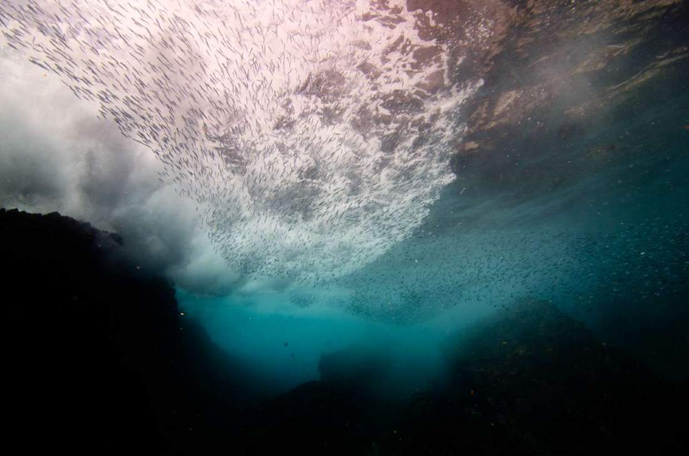
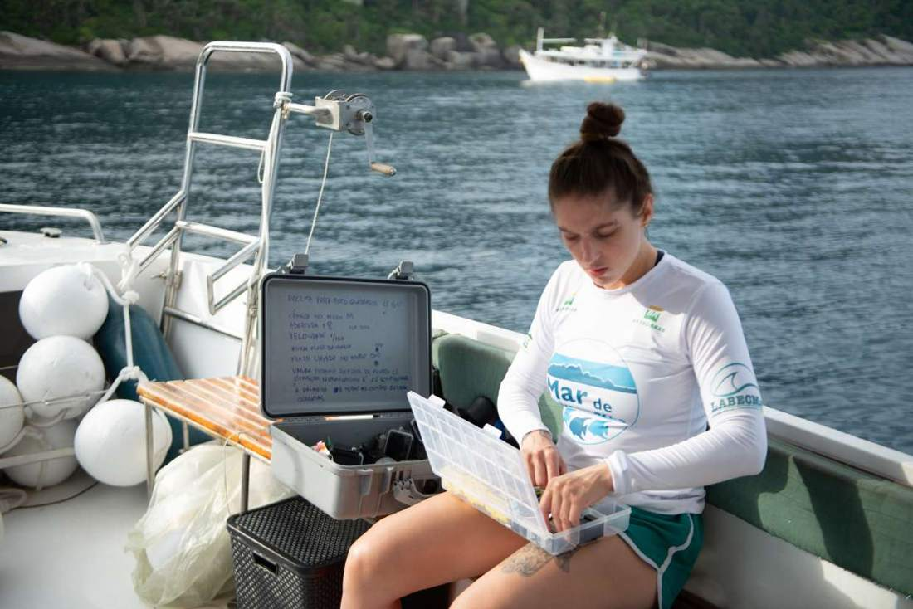
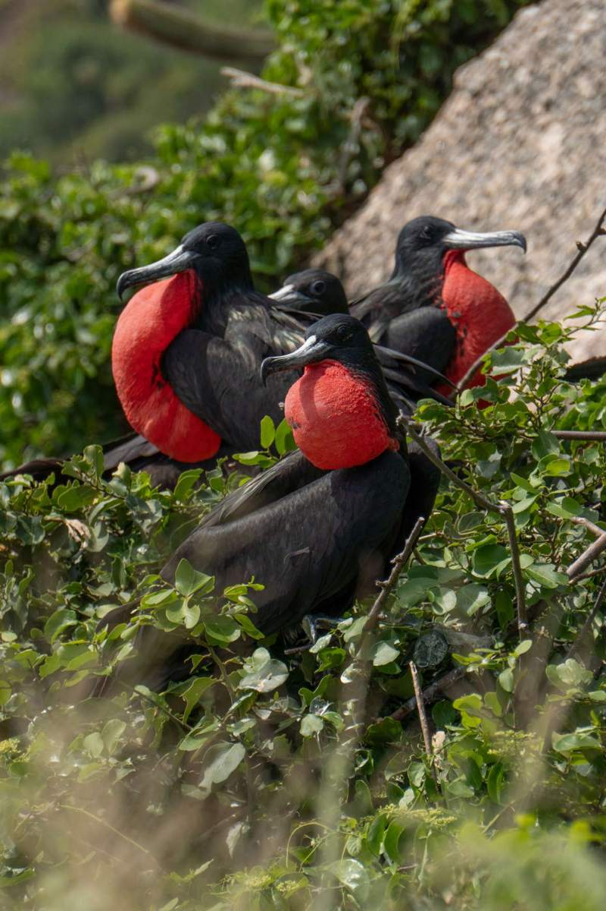
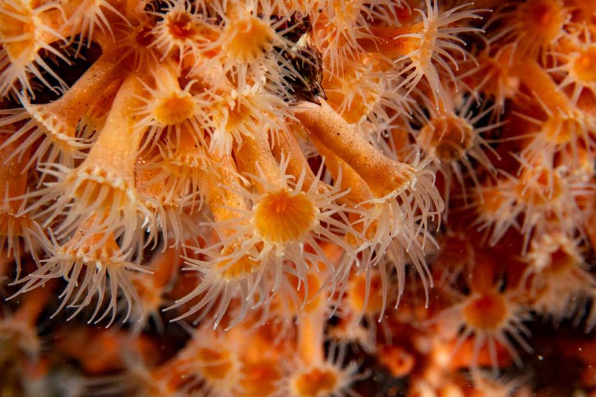
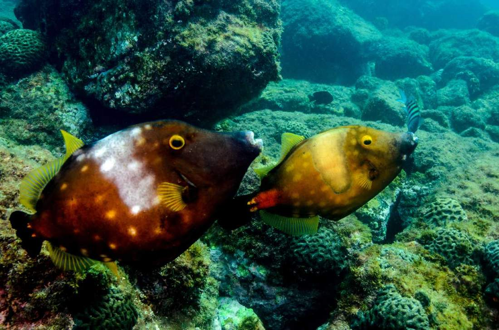
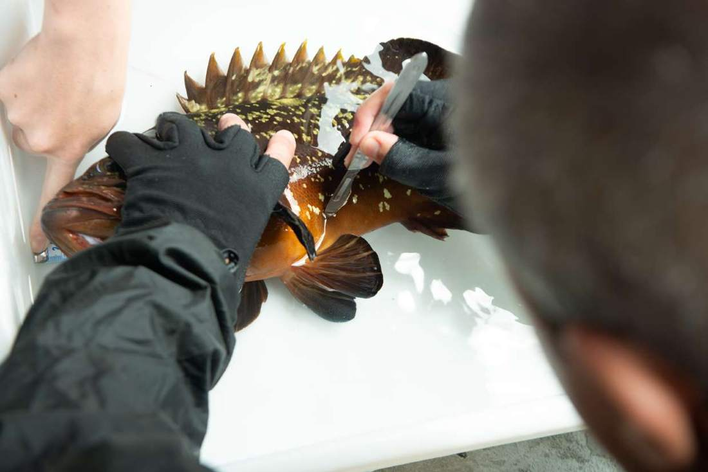
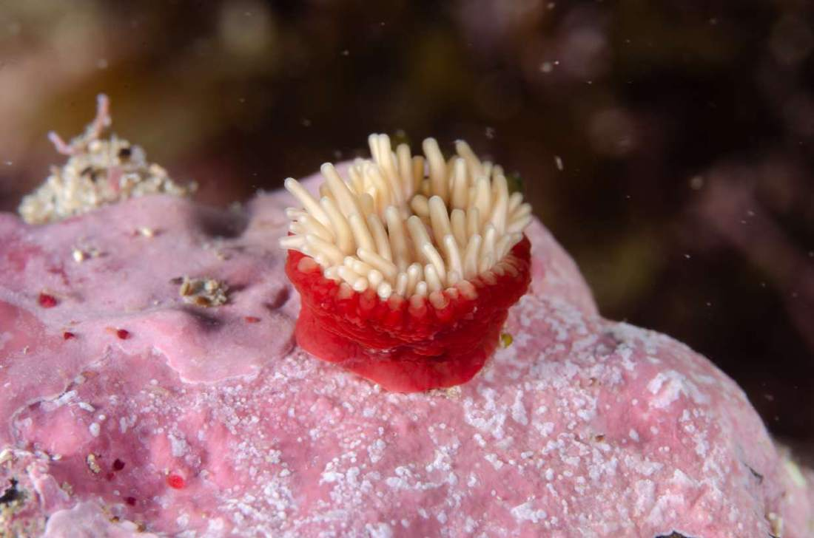

Monitoramento de invertebrados, peixes e fatores abióticos no ambiente marinho do Arquipélago dos Alcatrazes, litoral norte de São Paulo.
Conheça o projetoLançamento do livroO Projeto Mar de Alcatrazes foi um programa de monitoramento e pesquisa científica desenvolvido no Refúgio de Vida Silvestre (REVIS) do Arquipélago de Alcatrazes, uma das maiores áreas marinhas protegidas do Sudeste do Brasil.
Fruto da cooperação entre UNIFESP, Petrobras e FAP-UNIFESP, em parceria com o NGI-ICMBio Alcatrazes, o CEBIMar-USP e a UNESP, reuniu ciência, tecnologia e formação de estudantes para gerar o conhecimento que embasa a gestão das Unidades de Conservação.

A cerca de 35 km de São Sebastião, o arquipélago reúne cinco ilhas (Alcatrazes, Sapata, Paredão, Farol e Oratório), quatro lajes e alguns parcéis. A maior ilha tem cerca de 1,4 km², o equivalente a 200 campos de futebol, e o Pico da Boa Vista chega a 316 metros.
Há cerca de 11 mil anos, no fim da última Era do Gelo, o conjunto se separou do continente. O isolamento fez a vida seguir caminho próprio: hoje há espécies que não existem em nenhum outro lugar, como a perereca-de-alcatrazes, a jararaca-de-alcatrazes e o antúrio-de-alcatrazes. Povos pré-coloniais o chamavam de Uiraretama, “Lugar de Aves”, e ali fica um dos maiores ninhais de fragatas e atobás do Atlântico Sul.


Marinheiros que conhecem bem o lugar guiaram pesquisadores e estudantes por quatro frentes de trabalho, do fundo do mar à análise de dados de satélite.
Condições físico-químicas, correntes e temperatura da água, para entender como o clima molda o ecossistema.
Comportamento de budiões, frades, garoupas e raias, e das agregações de tubarões ameaçados de extinção.
Os organismos do fundo, que servem de abrigo, berçário e zona de alimentação, estudados com métodos não destrutivos.
Controle de bioinvasores como o coral-sol e o mexilhão-verde. A lista de espécies não nativas subiu de 11 para 23.




Filmagens remotas subaquáticas com isca: duas câmeras e uma caixa com sardinhas ficam pelo menos uma hora no fundo, registrando tudo o que passa.
Receptores e microchips revelam padrões de comportamento de garoupas, raias e outras espécies.
Mergulhadores contam e catalogam os peixes ao longo de cinco anos de expedições.
Sensores térmicos, radiômetros e modelos matemáticos mostram como a vida marinha reage às anomalias térmicas.



“E mandei colocar o barco na água para ir até a ilha caçar fragatas e atobás, que eram tantos que cobriam a ilha.”Pero Lopes, 1531
“Mar de Alcatrazes: monitoramento de invertebrados, peixes e fatores abióticos no ambiente marinho do Arquipélago dos Alcatrazes, litoral norte do Estado de São Paulo” reúne os resultados e os bastidores de cinco anos de pesquisa.
Com linguagem acessível, depoimentos de campo e rica documentação fotográfica, aborda aves e mamíferos marinhos, peixes, vida bentônica e o controle de espécies exóticas. Leitura para estudantes, educadores e apoiadores da conservação dos oceanos.
Organização: Jéssica P. Boelter, Ana Clara S. Athayde e Fábio S. Motta. O fotógrafo e cinegrafista Leo Francini produziu o documentário sobre o projeto.
25 de novembro de 2026, às 19h
Cine Roxy · Avenida Ana Costa, 443, Gonzaga, Santos/SP
Exibição do filme e e-book gratuito para os presentes
Franca, com ingressos limitados
Reservar lugar
